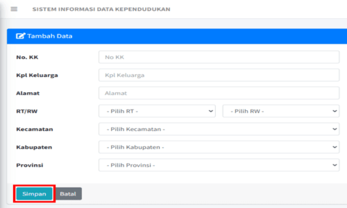

bagaimana menggunakan SIPENDUK?
berikut ini penjelasan mengenai langkah-langkah penggunaan aplikasi sipenduk berbasis web.
Cara Login
Langkah pertama untuk bisa mengakses ke halaman utama yaitu dengan melakukan login terlebih dahulu pada LINK BERIKUT. Setelah berhasil mengklik anda harus login dengan Memasukkan Username "admin" dan Password "admin" lalu klik tombol masuk. Dan setelah berhasil melakukan Login pada layar akan menampilkan halaman utama (beranda) sistem aplikasi berbasis web yaitu SIPENDUK.
Penting untuk diingat bahwa proses login dapat sedikit bervariasi tergantung pada desain dan antarmuka pengguna yang digunakan oleh sistem informasi kependudukan tertentu. Jika Anda mengalami kesulitan saat mencoba login, sebaiknya merujuk ke panduan atau petunjuk cara penggunaan yang diberikan oleh penyedia sistem atau menghubungi administrator sistem untuk bantuan lebih lanjut.
Tampilan Beranda
Gambar diatas adalah tampilan layar beranda halaman utama pada SIPENDUK. Tampilan dashboard halaman utama pada suatu sistem informasi data kependudukan berbasis web biasanya dirancang untuk memberikan ringkasan visual dan akses cepat terhadap informasi penting tentang populasi dan data kependudukan. Berikut adalah beberapa keterangan yang mungkin ada dalam tampilan dashboard halaman utama tersebut:
Menu Navigasi
Selain Dashboard pada tampilan layar admin/pengguna terdapat menu navigasi yang biasanya dilengkapi dengan pilihan menu navigasi yang memungkinkan pengguna untuk dengan mudah mengakses berbagai fitur dan modul lainnya dalam sistem informasi kependudukan yang dibutuhkan, seperti mengelola data penduduk & kartu keluarga serta mengelola data sirkuasi penduduk.
Cara Mengisi Kelola Data
Langkah selanjutnya yaitu dengan mengklik pilhan menu "Kelola Data" pada menu navigasi. Terdapat 2 bagian data yang harus diisi yaitu data penduduk dan data kartu keluarga, dimana masing-masing data memiliki form agar memudahkan dalam proses pengisian data supaya lebih efektif dan efesiensi.
Setelah memilih menu kelola data, klik pada bagian data penduduk lalu pilih "Tambah Data" agar bisa mengisi data penduduk yang bisa disimpan dengan aman dan mudah.
Pada tampilan form Tambah Data pada data penduduk yang sudah dipilih tadi silakan isi semua form sesuai dengan keaslian identitas kependudukan (KTP), jika sudah pilih simpan atau anda ingin membatalkannya.
Tampilan form Penambahan Data yang ada selain Data Penduduk juga terdapat Data Kartu Keluarga yang harus diisi secara lengkap keduanya pada bagian menu Kelola Data di SIPENDUK ini supaya bisa ditampilkan pada halaman layar utama (beranda) sebagai pelayanan informasi yang cepat,aman dan akurat.
Tentang Sirkulasi Penduduk

Sirkulasi penduduk memiliki dampak sosial, ekonomi, dan demografis yang signifikan. Hal ini dapat mempengaruhi pertumbuhan populasi, pola pemukiman, keanekaragaman budaya, ekonomi regional, dan infrastruktur. Pemerintah seringkali harus merencanakan dan mengelola sirkulasi penduduk agar dapat memenuhi kebutuhan dan tantangan yang terkait dengan perpindahan penduduk tersebut.
Sirkulasi penduduk merujuk pada perpindahan penduduk antara wilayah. Sirkulasi penduduk dapat terjadi dalam berbagai bentuk seperti yang terdapat dalam SIPENDUK ini memiliki menu pilihan data yang harus diisi untuk memenuhi kelengkapan data sirkulasi tersebut diantaranya: